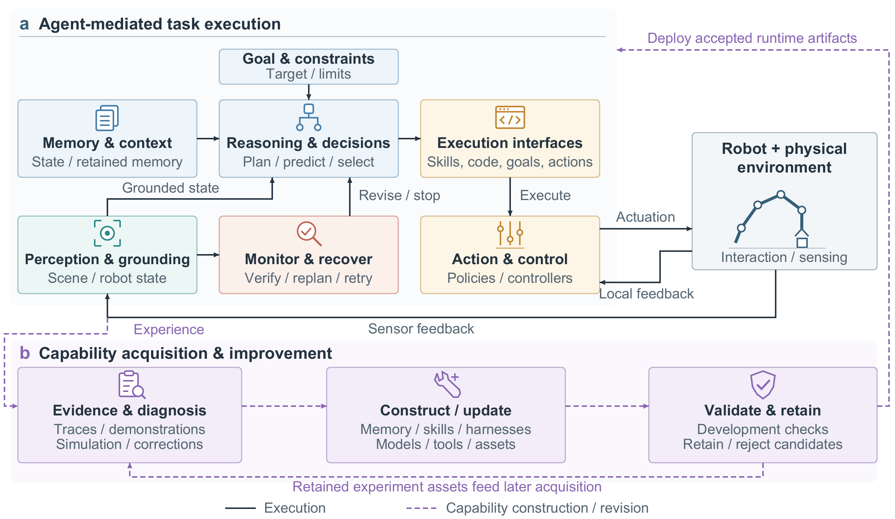
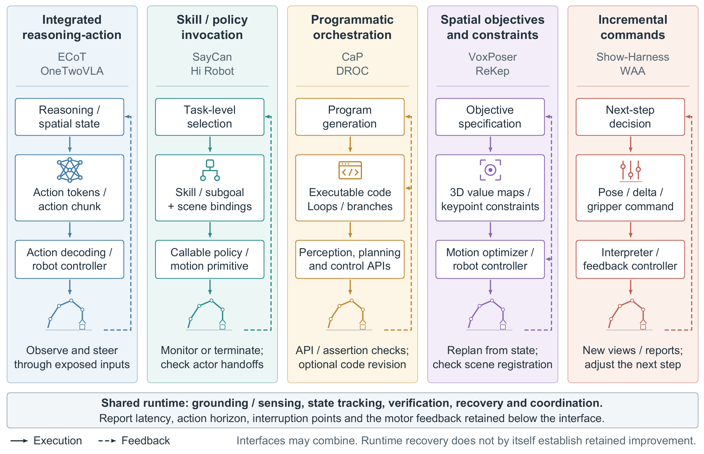
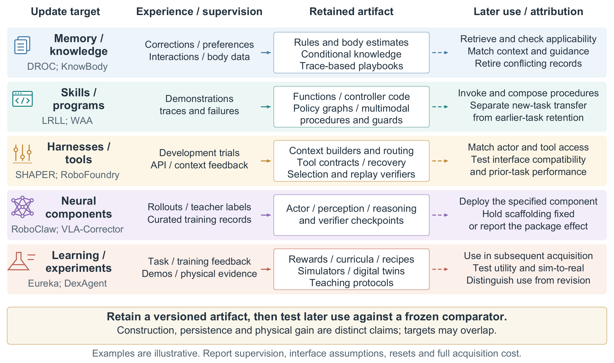
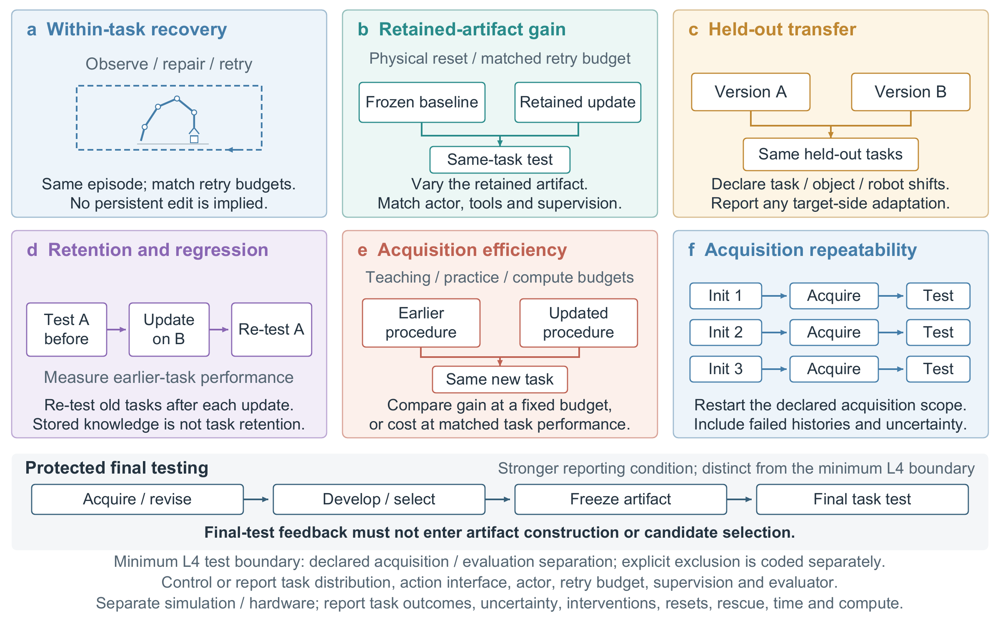

Toward Self-Improving Robotic Agents
From Interaction Experience to Reusable Manipulation Capabilities
Abstract
Recent advances in embodied artificial intelligence have enabled robot manipulation agents to transition from executing static policies to autonomously constructing reusable skills, programs, and behavioral artifacts. However, successful execution, retained utility, and repeatable acquisition support fundamentally different empirical claims. This mechanism-oriented analysis critically examines 162 purposively selected primary studies through two complementary questions: how agent decisions reach robot control, and how capabilities are acquired and retained. We connect reported gains to their underlying artifacts, recipients, comparators, and evaluation boundaries.
Retained programs and guidance can improve skill selection, command formulation, and recovery without altering the underlying actor, whereas neural adaptation and retention mechanisms govern distinct system components. However, aggregate performance gains can mask condition-specific losses or complete task failures. Applying our proposed five-level capability framework reveals that while intermediate levels of modular and simulation-based retention are widespread, no inspected system satisfies the Level-5 criterion of autonomous physical self-improvement under rigorous human- and procedural-intervention accounting.
Although repeatable acquisition, transfer, and retention co-occur in bounded simulation under stated interaction budgets, independently verified hardware self-improvement with connected transfer, retention, and full physical cost accounting remains unresolved. These findings motivate standardized evaluation protocols that explicitly couple retained capability gains with repeatable acquisition and rigorous intervention-cost accounting.
Framework
Two complementary tracks connect agent-mediated execution with capability acquisition: how decisions reach physical control, and how experience produces retained changes for later use.



Evaluating Self-Improvement
Execution performance, retained-artifact utility, and acquisition repeatability require different evidence. The review's five-level framework distinguishes these claims, with L5 adding a joint requirement for transfer, retention, and documented low human dependence.
